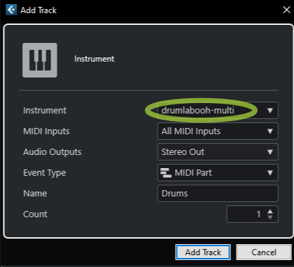
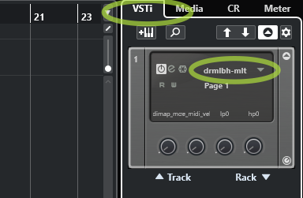
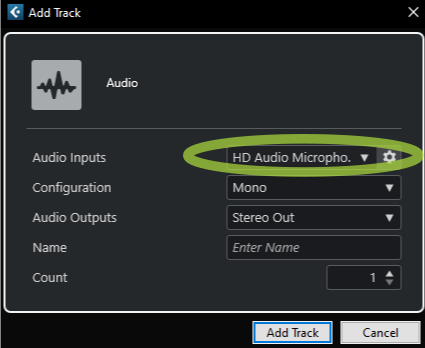
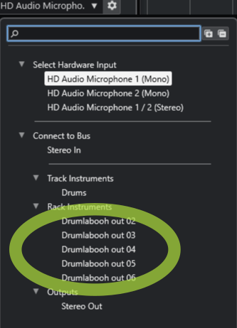

Оглавление
Драмлабух старается не мешать творчеству. Всё что вам нужно для написания партии ударных — это создать новую MIDI-дорожку в вашей любимой программе звукозаписи, навесить на неё плагин Drumlabooh и затем выбрать в нём один из установленных драмкитов, или накидать сэмплов из папок, и начать играть с клавиатуры, дрампадов или прописывать квадратики в секвенсоре.
1. Стерео и Многоканальный режимы
Драмлабух идёт в двух версиях плагина — стерео (называется просто Drumlabooh) и многоканальной (Drumlabooh-multi). Последняя выводит каждый инструмент из драм-кита в свой отдельный моно-канал, всего их может быть 36. Чтобы использовать стерео-версию, подключите к дорожке Drumlabooh, а для многоканальной — Drumlabooh-multi.
В стерео-версии микширование (уровень, панорама, кнопка mute) происходит на уровне плагина. В многоканальной всё это в плагине излишне и возложено на вашу программу звукозаписи, в микшере которой вы и будете управлять вышеперечисленным.
Читайте ПОДРОБНОСТИ об использовании многоканального режима — как подключать инструменты драмкита к разным дорожкам или шинам.
2.0 Драмкиты
При запуске Драмлабух сканирует в нужных папках драмкиты всех известных ему форматов и предлагает вам список, откуда киты можно выбирать. Кроме того, в нижнем левом углу плагина находится кнопочка Open, через неё можно открыть драмкит, лежащий вне папок, в которых ищет Драмлабух. Через диалоговое окно надо выбрать файл xml (для формата Hydrogen), sfz (для SFZ) или, в случае с форматом Drumlabooh, drumkit.txt либо drumkit.labooh.
Киты форматов Drumlabooh, SFZ и Hydrogen Лабух ищет в следующих папках:
/usr/share/drumrox-kits /usr/share/drumlabooh-kits $HOME/drumrox-kits $HOME/drum_sklad $HOME/drumlabooh-kits C:\drumlabooh-kits D:\drumlabooh-kits C:\drum_sklad /usr/share/hydrogen/data/drumkits /usr/local/share/hydrogen/data/drumkits /usr/share/drmr/drumkits $HOME/.hydrogen/data/drumkits $HOME/.drmr/drumkits
Можно добавить к этому списку свои, пользовательские папки. Для этого создайте текстовый файл user-dirs.txt в папке C:\drumlabooh (для Windows) или $HOME/.config/drumlabooh, и в файле в каждой строке пропишите полные пути к своим каталогам, например:
/home/test/sfz-main /home/test/sfz-misc /home/test/hydrogen-kits /home/test/drumlabooh
Важное замечание! Загружая драмкит, Драмлабух преобразует его сэмплы в памяти к частоте оцифровки текущей сессии DAW, что при большом драмките может затормозить загрузку и даже создать ощущение зависания. Например, сэмплы в драмките имеют частоту 44.1 кГц, а частота сессии 48 кГц. Просто подождите. Но если не хотите ждать каждый раз, нажмите кнопку Adapt в нижней левой части окна плагина. Она сохранит копию текущего драмкита в папку drum_sklad, и у этой копии сэмплы будут с частотой текущей сессии, кроме того данные преобразуются в 32-bit float (24-bit для FLAC) моно. Копия автоматически установится как текущий драмкит. При этом поддерживаются, для такого клонирования, только киты в формате Драмлабух с сэмплами в форматах WAV, AIFF и FLAC.
Давайте обсудим, какие вообще форматы китов поддерживаются.
2.1 Драмкиты в формате Hydrogen
При запуске Drumlabooh сканирует все установленные киты от драм-машины Hydrogen, которая выпускается для Linux и Windows. Под Hydrogen существуют десятки драмкитов, но чтобы установить их, надо запустить сам Hydrogen и пойти в нём в меню Драмкиты → Online import, откуда можно скачать киты из двух хранилищ — Hydrogen и Musical Artifacts.
В Linux при установке самого Hydrogen скорее всего установятся и некоторые киты. На сегодня, под все системы, самый быстрый способ скачать дополнительные киты для Hydrogen — это его вышеописанная функция Online import, ибо публичных ссылок на отдельные киты из хранилищ вы не найдёте.
2.2 Драмкиты в формате SFZ
Драмлабух в формате SFZ поддерживает MIDI mapping, заданный параметрами key. Для использования такого мэппинга установите в Драмлабухе опцию MIDI map mode равной "Kit". Иначе же, в режиме "Auto", мэппинг будет в виде последовательной нумерации, начиная, по умолчанию, с миди-ноты 36 для бас-бочки, первого сэмпла по счёту в ките. Однако первую ноту при режиме Auto можно изменить в опции Base MIDI Note.
Драмкиты превосходного качества — AVL Drumkits — вы можете скачать в формате SFZ по ссылке http://www.bandshed.net/sounds/AVLDrumkits_SFZ. Также большие SFZ-киты можно скачать тут, однако не все они совместимы с Лабухом.
Drumlabooh поддерживает ограниченный набор опкодов и параметров SFZ: group, region, key, sample, default_path, offset, lovel, hivel. Drumlabooh не поддерживает для сэмплов в SFZ файлы с именами, содержащими пробелы. Также покамест не поддерживаются сложные драмкиты вроде Salamander.
2.3 Киты в формате Драмлабуха
Киты в формате Драмлабуха. Один кит = одна папка, помещённая в $HOME/drumlabooh-kits, /usr/share/drumlabooh-kits, $HOME/drum_sklad (в Linux), либо, для Windows, в c:\drumlabooh-kits, d:\drumlabooh-kits, c:\drum_sklad или d:\drum_sklad. Либо в пользовательские папки.
При установке самого Драмлабуха в комплекте с ним идут киты из официального хранилища Drum Sklad on Github. Там же вы можете узнать подробности о формате.
Дополнительные киты, которых нет на Гитхабе, качайте с Drum Sklad в Телеге. Так что полная коллекция китов для Драмлабуха лежит на Гитхабе ПЛЮС в Телеге.
Почти все киты формата Драмлабух имеют опциональный, заданный в ките, MIDI-mapping стандарта General MIDI, который можно выбрать в Драмлабухе в опции MIDI map mode, где в выпадающем списке надо выбрать "Kit". В противном случае ("Auto") Драмлабух будет осуществлять mapping по принципу нумерации миди-нот начиная, по умолчанию, с 36 для бас-бочки (меняется в опции MIDI base note).
Если выбран MIDI map mode = "Kit", но mapping в ките не прописан, используется, опять же, автоматический mapping.
2.5 Киты-папки
Drumlabooh может использовать в качестве драмкитов папки с сэмплами, помещенные в $HOME/drum_dirs, C:\drum_dirs, или D:\drum_dirs - вложенные туда папки автоматически считаются китами Драмлабуха с альтернативными сэмплами в слотах. Просто создайте папку drum_dirs и поместите туда, например, вложенную папку My Drumkit, в которой лежат в подпапках сэмплы, примерно как ниже - разумеется названия могут отличаться. В примере, "1. Kick" и "2. Snare" это вложенные папки:
1. Kick
kick01.wav
kick02.wav
kick03.wav
2. Snare
snare01.wav
snare02.wav
snare03.wav
Числа в именах папок помогают правильно сортировать по алфавиту папки при загрузке в слоты.
Это очень простой и быстрый способ использовать дрампаки, скачанные например с https://www.reddit.com/r/Drumkits/. Распаковываете киты-папки оттуда в drum_dirs, и вперёд!
Ограничения следующие - максимум 36 папок внутри папки-драмкита, и максимум 128 сэмплов в каждой папке-инструменте.
Поддерживаемые форматы сэмплов
Драмлабух поддерживает сэмплы в форматах WAV, AIFF, OGG, FLAC, MP3. Стерео-сэмплы читаются как моно, движок загружает только левый (первый по счёту) канал, потому что так проще и правильнее микшировать внутри движка. Предварительно панорамированные стерео-киты навязывают вам определённое расположение ударных, и если вы захотите панорамировать их иначе, это ухудшит звучание, ибо исходный сигнал будет слишком нарушен.
3. Встроенный микшер
Справа от списка с драмкитами расположены ячейки инструментов, куда загружаются ударные из драмкита или внешнего файла. Каждая ячейка состоит из следующих частей:

1. Светодиод — загорается, когда играет инструмент, загруженный в ячейку.
2. Название инструмента — задано в драмките или вычислено Лабухом, если не задано. Цвет фона меняется в зависимости от типа сэмпла - пустой слот, сэмпл с одним слоем, сэмпл с несколькими слоями, сэмпл с вариантами. Последние можно выбирать находящимся левее кнопками + и -.
3. FX — вызывает окно эффектов для текущего инструмента. Окно можно закрыть кнопкой с крестиком либо клавишей Esc. Используйте эффекты, если привычный звук драмкита надоел.
Имеем два резонансных фильтра — LP (низкочастотный, пропускает только частоты ниже определённого значения) и HP (высокочастотный). Значение (частота) среза регулируется параметром cutoff (первый ползунок фильтра). Также есть параметр резонанса — resonance. Играйтесь ими, чтобы на лету делать новые звуки из исходных сэмплов. Если же звучание сэмплов кажется тусклым или убогим, попробуйте включить блок Analog и вращать крутилку, чтобы придать сигналу тёплое, аналоговое звучание.
Следующие элементы интерфейса недоступны в Multi-channel версии плагина, поскольку они бы дублировали элементы DAW для связанных с плагином дорожек:
4. Регулятор панорамы — значения от 0 (крайнее левое) до 1 (крайнее правое), 0.5 — середина. Помещает инструмент левее или правее по алгоритму, заданному опцией Pan mode (см. ниже). Разные DAW при микшировании применяют к дорожкам различные режимы панорамы, а некоторые DAW позволяют выбрать режим — собственно, во многом именно алгоритмы панорамы влияют на "фирменное" звучание DAW. Драмлабух, имея внутри себя полноценный микшер, как в DAW, тоже предоставляет выбор режима панорамы.
5. Регулятор громкости — нелинейный, значения от -96 до +6 dB.
6. Переключатель Mute (молчать, заглушить) — если стоит галочка, инструмент не играет, т.е. временно исключается из микса.
4. Настройки плагина
В нижней части окна плагина находятся настройки.
MIDI map mode — там два режима, Auto и Kit. Если выбрано Auto, Drumlabooh назначает каждому инструменту из кита номера MIDI-нот, начиная с другой опции, Base MIDI note, где по умолчанию стоит 36 — это нота C второй октавы. Такой режим установлен по умолчанию и он удобен для игры с MIDI-клавы или прописывания квадратиками в пианоролле. Другой режим, Kit, использует номера MIDI-нот, заданные в файле драмкита; как правило, они соответствуют стандарту General MIDI mapping и совместимы с электронными барабанами или падами. Этот же режим совместим с грувами из Ардора.
То есть, MIDI mapping — это соответствие номеров MIDI-нот (поступающих от клавиатуры, пэдов или с пианоролла) и инструментов из драмкита. Почти все драмкиты Драмлабуха имеют совместимость с General MIDI при выборе режима Kit. Установки MIDI mapping читаются также из драмкитов формата SFZ. Однако стандарт General MIDI не покрывает всё многообразие ударных, и в некоторых китах ряд инструментов не имеют соответствий в номерах нот General MIDI. Для таких китов, чтобы получить доступ ко всем инструментам кита, лучше выбрать режим мэппинга Auto.
Для более сложного MIDI mapping используйте настройки вашего MIDI-железа или, в Reaper, плагин "JS MIDI map to key v2" — просто подключите его к дорожке перед Драмлабухом и выберите созданный текстовый файл мэппинга условно такого содержания:
A3 -> E5 C4 -> C5
Fixed MIDI velocity — включить, чтобы играть сэмплы на максимальной velocity; полезно для электронной музыки.
Rnd seed tweak — "зерно" для генератора псевдослучайных чисел, от 1 до 16777216. Drumlabooh использует детерминированный генератор псевдослучайных чисел, гарантирующий, что при одном и том же Rnd seed tweak и текущей позиции воспроизведения последовательность чисел каждый раз будет одинаковая.
Для некоторых многослойных сэмплов в драмкитах есть варианты, которые выбираются на основе значений этого генератора. Это придаёт барабанной партии подобие живой игры. При обычном генераторе вы бы с каждым новым воспроизведением получали разные по звучанию партии, варианты сэмплов не были бы предсказуемы, что затруднило бы микширование и мастеринг.
В Drumlabooh же каждый раз вы будете получать одну и ту же последовательность таких чисел, однако она зависит от Rnd seed tweak. Меняете значение этого параметра — получаете совершенно новую последовательность. У вас есть 16777216 вариантов последовательности.
Pan mode — выбор режима панорамы для микшера Драмлабуха. Подробнее в этой статье. По умолчанию стоит паннер на основе синуса/косинуса, -3 dB.
Во многом режим панорамы и определяет звучание микса в DAW, ибо отвечает за воспринимаемую громкость сигнала в приближении ползунка к середине. Вникните в это подробнее, и вероятно будет логичным выбрать в Лабухе такой же режим панорамы, как в вашей DAW.
Analog. Глобальный переключатель и слайдер сатуратора, который влияет на весь микс, обрабатывая его в конце цепи следования сигнала. Полезно для живых, но тихих барабанов.
5. О многоканальном режиме подробно
Повторюсь, что в многоканальной версии плагина — Drumlabooh-multi — нет ползунков панорамы, громкости и кнопки Mute — всё это возложено на микшер DAW.
Драмлабух предоставляет 36 выходных моно-каналов, по одному на каждый инструмент из драмкита.
5.1 Как использовать многоканальность с Ардором?
0. Вы можете направить звуковые выходы плагина вручную, создавая дорожки и делая на них роутинг, либо автоматически. Ниже я рассказываю про автоматический режим.
1. Создайте MIDI-дорожку, выбрав в качестве инструмента Drumlabooh-multi.
2. Появится вот такое окно:

Выберите "36 channels" и "Fan out", нажмите Add. Готово! Получаете группу из 36 дорожек-каналов, уже с перенаправлением на них звука с дорожки Drumlabooh-multi. Каждая дорожка — один инструмент из кита.
3. Загрузите в Drumlabooh-multi драмкит. Например, в нём будет 18 инструментов. Таким образом, нам нужно только 18 выходных каналов из имеющихся 36. Удалите ненужные.
Альтернативный путь:
1. Допустим вы работали на дорожке с обычным стерео-Лабухом и хотите навесить вместо него мульти. Вперёд! Подключите к дорожке мульти-версию. Но теперь мульти будет играть на стерео. Нам это не нужно. Надо раскидать выходы на шины или другие дорожки.
2. В микшере Ardour, правый клик в верхней части микшерного канала дорожки и выберите Fan out to tracks или Fan out to buses. Подождите немного — и появится группа с моно-дорожками или шинами, в зависимости от того, куда вы распределяли — в дорожки или шины.
3. Чтобы использовать на такой дорожке или шине стерео-эффект, щелкине правой кнопкой мыши на добавленном эффекте, выберите в появившемся меню пункт Pin connection и соедините порты следующим образом:
{kind=link}
4. Теперь все новые дорожки-каналы в группе. Объединены. Чтобы нормально работать с ними по отдельности, сделайте правый клик на заголовке группы и выберите пункт меню Remove group:
{kind=link}
5. Теперь осталось удалить ненужные дорожки — например, в драмките только 18 инструментов, а у нас 36 дорожек!
5.2 Многоканальность в Reaper
0. Вы можете направить звуковые выходы плагина вручную, создавая дорожки и делая на них роутинг, либо автоматически. Ниже я рассказываю про автоматический режим.
1. Insert → Virtual Instrument on track, добавить Drumlabooh-multi (LV2i или VST3i).
2. Подтвердить в Build routing confirmation window.
3. Готово!
5.3 Как использовать Multi-out в Cubase?
1

2
3 - ЗАГРУЖАЕМ КИТ

4
5

6

7

8
9
